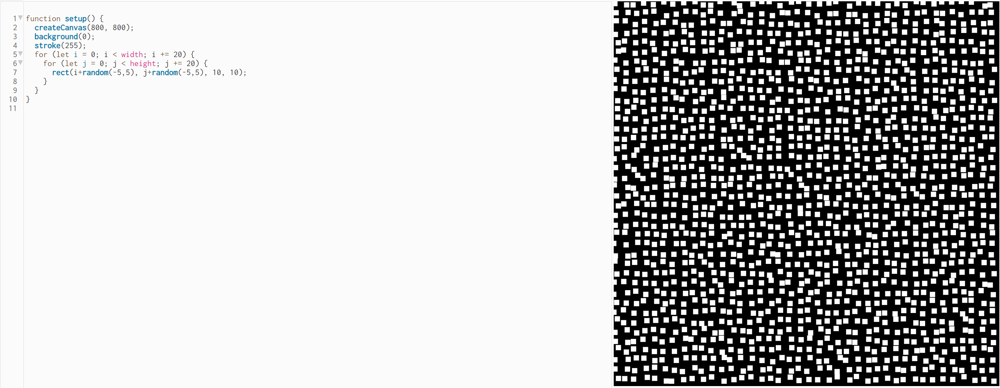
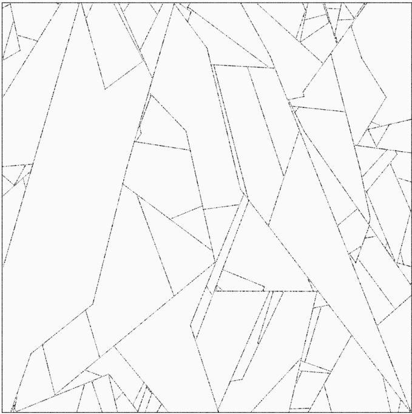

Experiment 2: Vector Art, Animation & Interactivity
Imitate
I decided to imitate and build off of the example on slide 34 of lecture 3:
This is my imitation of the example:
I made it a little more complicated initially because I wanted room to expand it into something more interesting. I stored all of the squares and their offset in a 2d array so I could store information in them.
Integrate
I liked the “Shattered” example on slide 6 of lecture 3, so I decided to combine it with the previous example.
This is my result:
I decided to connect the points to all other points adjacent to them in the 2d array. I also changed the squares to dots and changed the colors to make it look better. I also animated the points vertically using the sin function and added a trail effect by making the background partially transparent.
Innovate
For the innovate section, I decided to play around with multiple spins on what I had made. for the first one, I added a random color to each point, and I animated them in both the x and y dimensions. This animation is slightly different for each dimension, and is dependent on position so it makes it very dynamic:
I wondered how it would look without the connecting lines, so I removed them and made the background black. I also added some user interaction by making it so that when you click, a ripple propagates outward from that position:
Another variation that I tried was removing the background from the draw loop so every frame was drawn on top of the previous ones:
I also went back to a version with lines and made the color of the line fade from one point’s color to the other linked point's color. This made the program much slower but looked really cool:
Reflection
I worked on this project alone. For me, the javascript programming was really easy and the only issues I came across were putting my programs into my website. I wanted to add multiple iterations of my program to my webpage, but the way that was given didn’t seem to work with that. The solution I found was to use iframes to attach multiple HTML files with their own canvases. Otherwise, I didn’t have any problems and it was really interesting to mess around with the code in the visual environment.